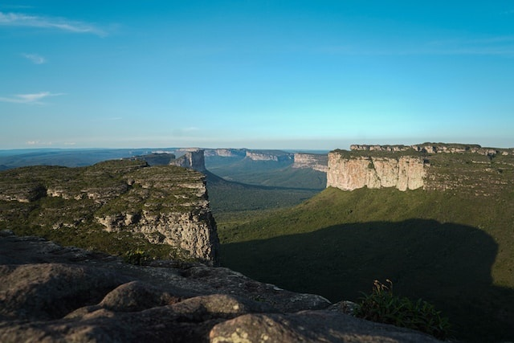
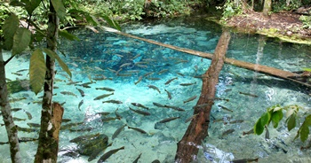
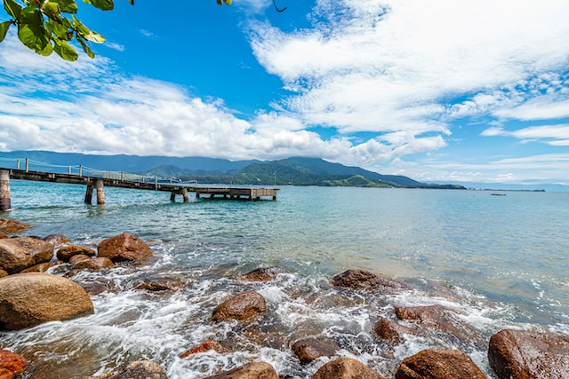
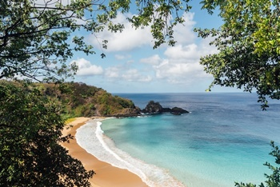
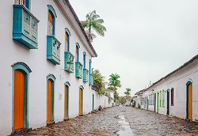
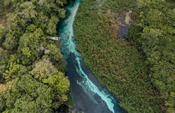
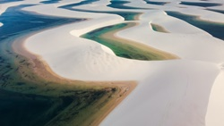

Top 5 Cidades Turísticas Ecologicas no Brasil
Descubra as 5 cidades turísticas do Brasil que mais preservam a Natureza
1 - Chapada Diamantina (BA)
Considerado um dos destinos de ecoturismo mais exuberantes de todo o país, a Chapada Diamantina, que fica localizada no estado da Bahia, reúne uma quantidade surpreendente de atrações naturais – são tantas delas, inclusive, que é praticamente impossível explorar tudo que a região tem a oferecer, distribuídos em seus 70 mil quilômetros quadrados, em menos de um mês inteiro. Aliás, justamente por isso, é importante que você procure uma agência de ecoturismo antes da sua viagem para a Chapada Diamantina de maneira a poder conhecer os principais e melhores atrativos e otimizar seu tempo no destino.
2 - Chapada dos Veadeiros (GO)
.jpg)
Outra Chapada brasileira repleta de exuberância e inúmeros atrativos naturais é a Chapada dos Veadeiros, no estado de Goiás, que conta com cachoeiras e piscinas cristalinas (como a deslumbrante Santa Bárbara), cânions, formações rochosas de mais de um bilhão de anos (o Vale da Lua) e uma riquíssima e diversificada flora e fauna. No entanto, não é só sua maravilhosa natureza que deu fama à região – ela também é muito conhecida por seu esoterismo, pois além de abrigar cristais de quartzo e pinturas rupestres, o destino está situado na mesma latitude de Machu Picchu e, por estes e vários outros motivos, é considerado uma fonte de fortificação e curas espirituais para os místicos, espiritualistas, hippies, naturalistas, entre outros. Nesta chapada, o acesso é bem mais fácil e simples do que em outras chapadas no Brasil – para chegar à principal porta de entrada, que fica no município de Alto Paraíso, são apenas 200 quilômetros de Brasília.
3 - Nobres (MT)
Apesar de ser um destino mais “recente” do ecoturismo e ainda pouco turisticamente explorado, Nobres, um pequeno município do estado do Mato Grosso, ganha cada vez mais destaque graças às suas paisagens encantadoras, que incluem cachoeiras, balneários naturais e poços de águas extremamente transparentes que formam aquários naturais com peixinhos (como a Cachoeira Serra Azul e o Aquário Encantado, lugares perfeitos para mergulho), rios cristalinos para praticar flutuação, cavernas de mais de 300 milhões de anos e mirantes para fazer tirolesa, trilhas ou simplesmente admirar o pôr-do-sol. O mais impressionante é que toda essa natureza ainda permanece preservada e praticamente intocada, o que se deve por conta de sua localização – o acesso não é difícil, mas é um pouco afastado e, por ser um local recentemente descoberto, a infraestrutura turística é ainda um tanto simples, mas fica apenas a 150 quilômetros de Cuiabá.
4 - Ilhabela (SP)
Um destino já muito famoso pelo Brasil, tanto pela sua badalação como por suas belezas naturais, Ilhabela é um arquipélago no litoral norte paulista formado por 15 ilhas, mais de 40 praias, cerca de 360 cachoeiras, mais de 80% de sua área coberta por vegetação de mata atlântica e uma excelente infraestrutura turística. Por isso, a região realmente atende a todas as vontades e gostos de seus visitantes, sejam eles relaxar nas praias paradisíacas e mais selvagens que existem por lá (como do Bonete e dos Castelhanos) ou aproveitar as festas e praias badaladas, mais frequentadas por jovens (como do Curral), ou então fazer passeios como rapel, mergulho, surfe, kitesurfe e windsurfe, vela, entre outros esportes, em praias ideais para isso (como das Cabras e do Jabaquara) ou em suas belas cachoeiras (como da Lage, do Gato e dos Três Tombos). Você pode chegar à Ilhabela de carro ou ônibus a partir de São Paulo e o acesso é bem simples através da balsa.
5 - Fernando de Noronha (PE)
Fernando de Noronha é provavelmente o destino mais paradisíaco e exótico de todo o Brasil – não é à toa que é conhecido como o “paraíso na Terra” –, mas, principalmente, é o destino perfeito para o ecoturismo, pois além de cobrar uma taxa de preservação de cada turista que visita o arquipélago de forma a conservar e proteger toda a sua riqueza natural, também incentiva a educação ambiental com a Área de Preservação Ambiental e o Parque Nacional Marinho, sem mencionar o Projeto Tamar (que conta com museu, palestra, observação da desova de tartarugas-marinhas na praia e muito mais). O “Caribe brasileiro”, como também é chamado – e com razão – conta ainda com algumas das praias mais bonitas do mundo inteiro, com águas extremamente cristalinas e mornas, ideais para mergulho, e onde você pode observar a presença da fauna marinha mais exuberante do nosso país, que incluem diversas espécies de peixes, golfinhos, corais, arraias e tartarugas, entre outros. O acesso a Fernando de Noronha deve ser feito a partir de Natal ou Recife, pois todos os voos de e para a ilha chegam e saem somente dessas duas cidades.
Conheça os 5 pilares de avaliação que levamos em consideração para definir as top 5 cidades turísticas Ecológicas
Conheça outras cidades Turísticas
Paraty - RJ
A cidade histórica de Paraty é Patrimônio Mundial pela Unesco devido à sua cultura e biodiversidade excepcionais. Paraty é um desse lugares do mundo onde é possível ter as melhores experiências em uma única viagem. É um lugar singelo, com ritmo próprio, onde culturas tradicionais convivem com a arquitetura colonial e o conforto da modernidade, em um cenário paradisíaco. Aqui tem: História, Cultura, Gastronomia, Praia, Cachoeiras, Aventura, Música, Diversão, Passeios, Artesanato, Eventos, Arquitetura, Tradição… Paraty é uma festa para os sentidos. Paraty recebe bem aos amantes da natureza, da cultura e da gastronomia com opções incríveis de hotelaria, restaurantes, turismo e compras. Experimente Paraty! Curta Paraty! Vivencie Paraty!
Bonito - MS
Bonito, uma joia escondida no coração do Brasil, onde a natureza exuberante se encontra com experiências de ecoturismo inesquecíveis. Conhecida por suas águas cristalinas, grutas fascinantes e biodiversidade única, Bonito é o destino perfeito para aqueles que buscam uma conexão autêntica com o meio ambiente. Bonito é comprometida com a preservação do meio ambiente. A gestão sustentável do ecoturismo é uma prioridade, garantindo que as gerações futuras possam apreciar a beleza única da região. Participe de atividades ecologicamente responsáveis, como trilhas guiadas, observação de aves e passeios a cavalo, promovendo o turismo sustentável e respeitando a flora e fauna locais.
Lençóis Maranhenses - MA
Um destino verdadeiramente único no nordeste do Brasil. Este paraíso ecológico é conhecido por suas dunas de areia branca intercaladas com lagoas cristalinas, criando uma paisagem deslumbrante e inesquecível. Descubra a magia deste ecossistema único e as experiências incríveis que Lençóis Maranhenses oferece. Os Lençóis Maranhenses é uma área de proteção ambiental, com esforços dedicados à conservação desse ecossistema frágil. O turismo sustentável é incentivado para garantir que as futuras gerações possam desfrutar dessa maravilha natural. Desfrute de pousadas acolhedoras que se integram harmoniosamente ao ambiente, oferecendo conforto e uma autêntica experiência local.